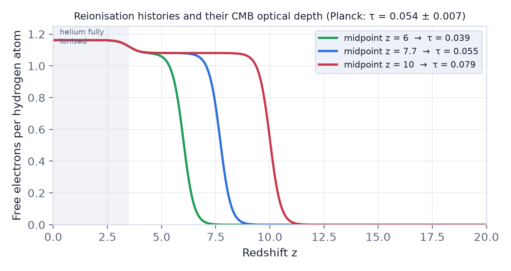
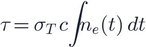
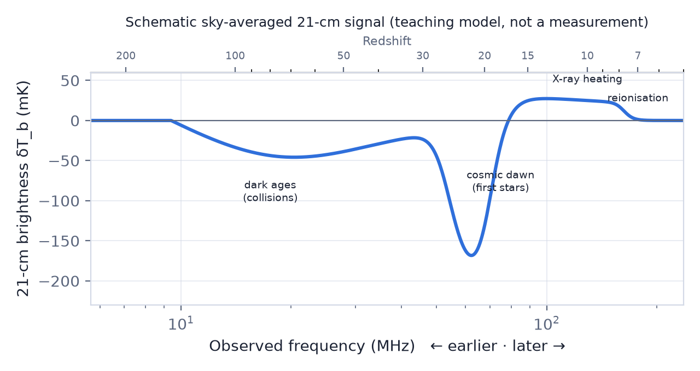

In this lesson you will learn
|
After the CMB: the dark ages
After recombination at 380 000 years (lesson L4.4), the universe was filled with neutral hydrogen and helium gas, slowly cooling as it expanded. There were no stars yet. This period is called the dark ages.
Meanwhile dark matter halos grew hierarchically (lesson L5.5). In the first halos massive enough, around – at redshift 20–30, gas could cool and collapse into the first stars: massive, hot, metal-free Population III stars. Their light marks cosmic dawn.
Reionisation
Ultraviolet photons from the first stars and galaxies had enough energy (above 13.6 eV) to split hydrogen atoms again. Ionised bubbles grew around each galaxy, overlapped, and eventually filled the whole intergalactic medium. This is reionisation: the last major phase change of the universe.

Evidence 1: quasar spectra
Neutral hydrogen absorbs light at the Lyman-α wavelength (121.6 nm). Even a tiny fraction of neutral gas, about one atom in 10 000, absorbs completely. In the spectra of quasars at redshift above about 6, all light blueward of Lyman-α is gone: the Gunn–Peterson trough, first seen in 2001. Reionisation was ending around , when the universe was about a billion years old.
Evidence 2: the CMB optical depth
Free electrons produced by reionisation scatter CMB photons (lesson L5.1). The total probability of scattering is the optical depth

where is the Thomson cross section. Scattering suppresses small-scale CMB fluctuations by and creates a polarisation signal on the largest scales. Planck measures
In a simple model where reionisation happens quickly, this corresponds to a midpoint at , about 700 million years after the Big Bang.
Try it: Interactive Cosmic Timeline Jump to "Dark ages", "First stars" and "Reionisation" in the Interactive Cosmic Timeline and compare their temperatures and energy budgets. |
Try it: Cosmology Calculator Enter z = 7.7 and z = 6 in the calculator to see how old the universe was during reionisation. |
Evidence 3: galaxies seen by JWST
The James Webb Space Telescope finds many bright galaxies at redshifts 10–14. Whether their ultraviolet light is sufficient, or even more than sufficient, to reionise the universe is an active research question.
The 21-cm line of hydrogen
A hydrogen atom has a tiny energy difference depending on whether the spins of its proton and electron are parallel or antiparallel. A flip between the two states emits or absorbs a photon with
This is the 21-cm line. The transition is extremely slow (about once every ten million years per atom), but there is so much hydrogen that it is easily seen in our Galaxy. From redshift it arrives at
so every observed frequency corresponds to one cosmic time: 21-cm observations can build a three-dimensional movie of neutral hydrogen.
The spin temperature
The relative number of atoms in the two spin states is described by the spin temperature . Hydrogen is seen against the CMB with brightness temperature
(for Planck parameters), where is the neutral fraction.
- If the gas absorbs: .
- If it emits: .
- If or the gas is ionised, there is no signal.
The spin temperature is pulled towards the gas temperature by collisions (at high density) and by Lyman-α photons from the first stars, and otherwise towards the CMB temperature.

A story written in one curve
|
The EDGES puzzle In 2018 the EDGES experiment reported an absorption trough centred at 78 MHz () about twice as deep as standard models allow, which would require new physics. In 2022 the SARAS 3 experiment found no such signal at the claimed depth. The measurement is extremely difficult and remains unresolved. |
Try it: 21-cm Global Signal Explorer Follow the four stages in the 21-cm Global Signal Explorer, then add an extra radio background and see how large it must be to reach the EDGES depth. |
Why 21-cm cosmology is so hard
Radio emission from our own Galaxy and from other galaxies is 10 000 to 100 000 times brighter than the cosmological signal. Fortunately these foregrounds vary smoothly with frequency while the 21-cm signal does not. Separating them requires exquisite calibration and removal of radio interference from human technology.
Current and future experiments:
- Global signal: EDGES, SARAS, LEDA, REACH, and proposed lunar far-side antennas.
- Fluctuations: LOFAR, MWA and HERA have set increasingly tight limits; the Square Kilometre Array (SKA-Low, under construction in Australia) aims to image reionisation directly.
The ultimate prize is the dark ages: in principle 21-cm fluctuations contain far more information about the initial conditions than the CMB, because they probe many more independent volumes.
Remember this
|